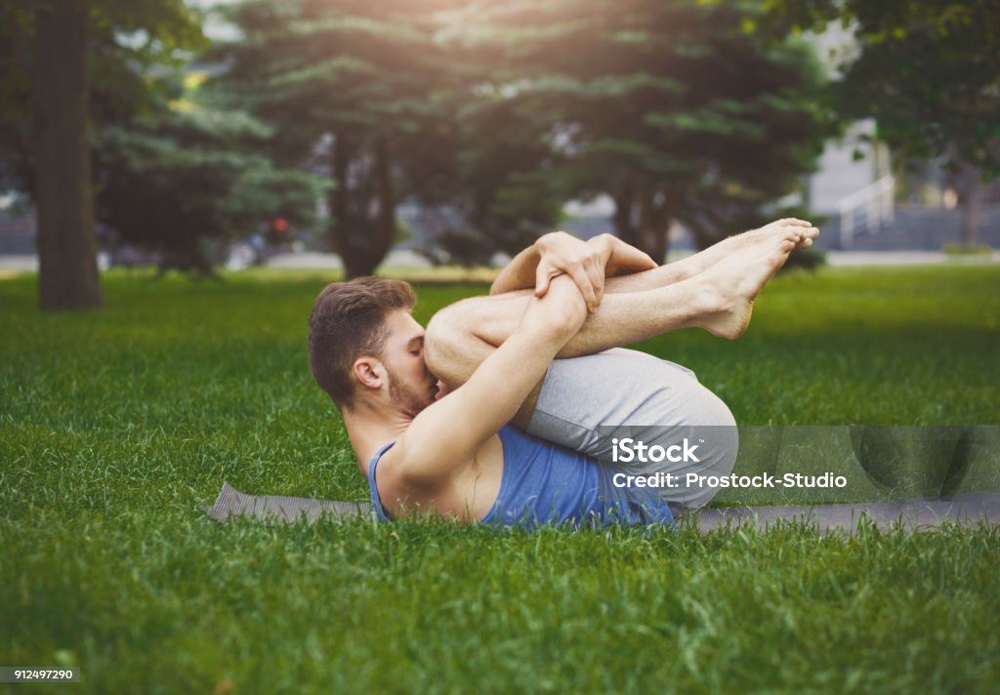
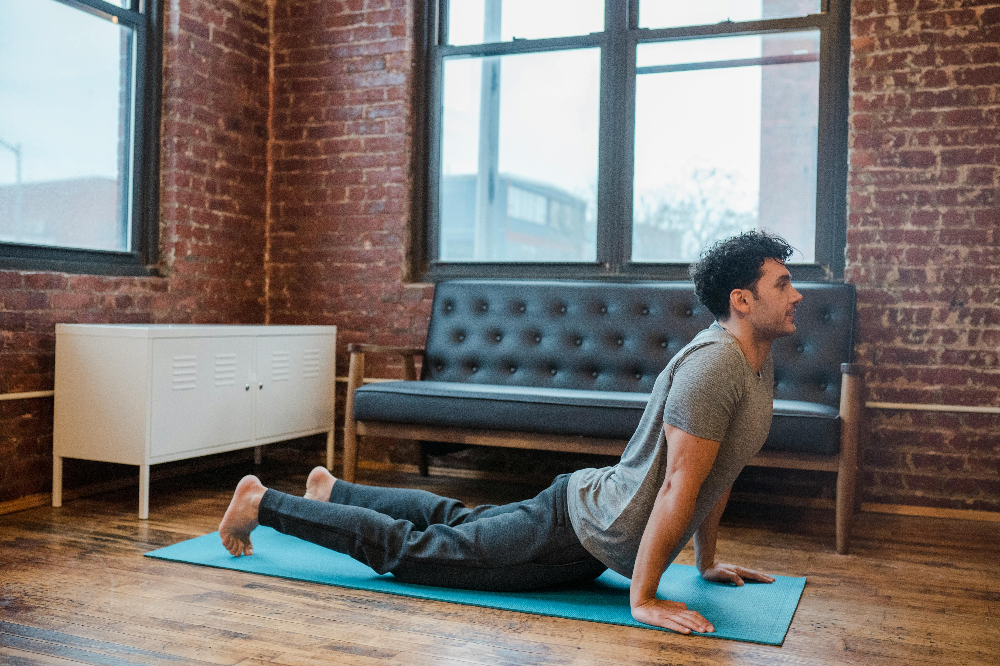
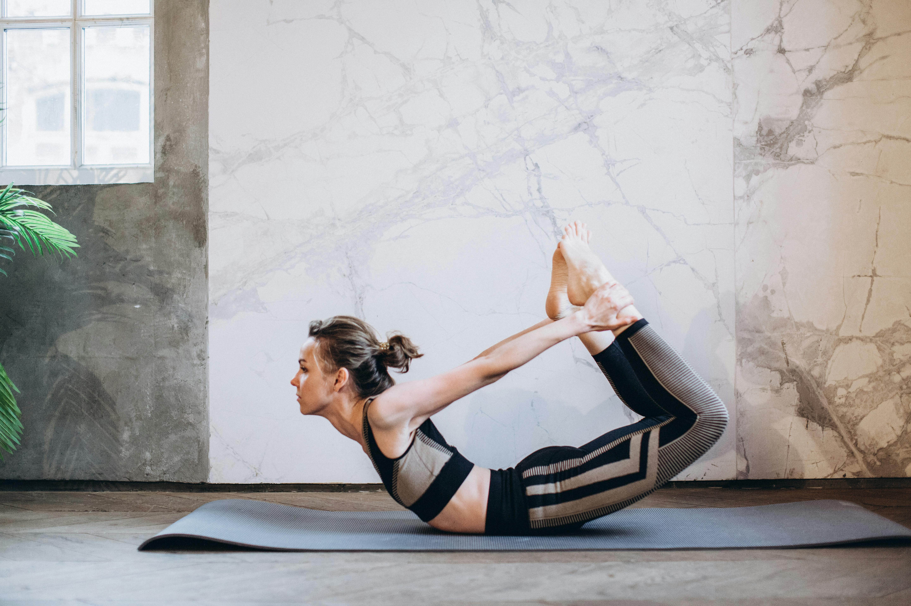
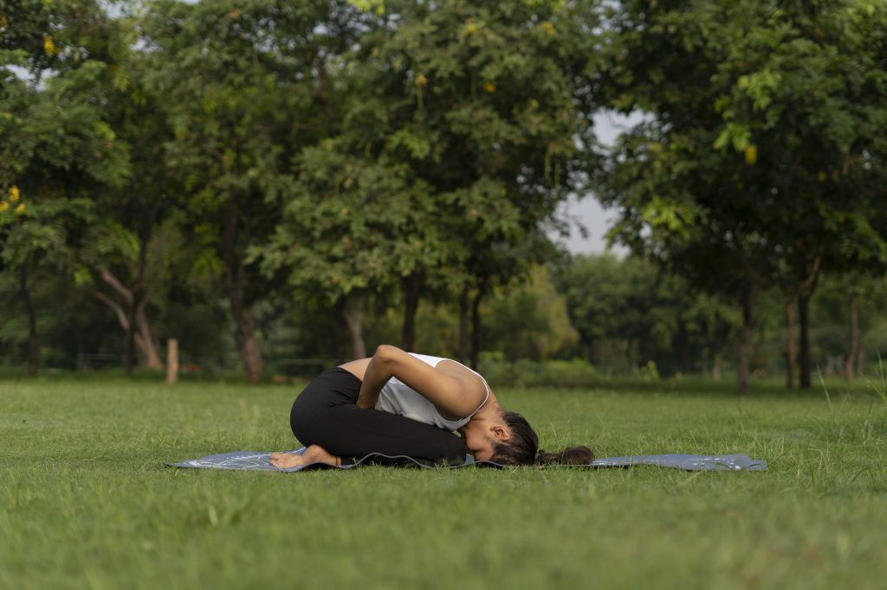
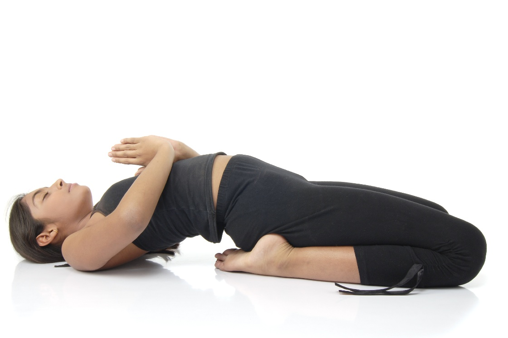

Navel Displacement (Nabhi Khiskna)
Navel displacement is a condition where the navel shifts from its normal position, causing issues such as digestive problems, constipation, abdominal pain, and anxiety. Yoga and meditation can help in healing and bringing the navel back to its natural alignment.
Recommended Yoga Poses
1. Pawanmuktasana (Wind-Relieving Pose)
process- Start: Lie on your back with your legs extended and arms at your sides. Bend Knees: Breathe in and as you exhale, bend your knees and bring them towards your chest. Interlock Hands: Interlock your fingers and place them around your knees or just below the knees. Press Knees: Gently press your thighs against your abdomen. Lift Head: Inhale, and as you exhale, lift your head and try to touch your chin to your knees. Hold: Hold the pose for a few breaths, maintaining a comfortable pressure on your abdomen. Release: Inhale, and as you exhale, release your head and legs back to the starting position. Repeat: Repeat the pose a few times, or as comfortable, and then relax in a supine position.
This pose helps in removing gas, easing digestion, and realigning the navel naturally.
Watch Video2. Bhujangasana (Cobra Pose)
process- Start on your stomach: Lie flat on your belly with your legs extended and the tops of your feet pressing into the mat. Place your hands: Position your palms flat on the floor under your shoulders, elbows close to your body. Inhale and lift: As you inhale, gently lift your chest and upper body off the floor, using your back muscles and keeping your lower body grounded. Engage your core: Keep your core engaged to support your lower back and avoid overextending. Maintain the pose: Hold the pose for a few breaths, keeping your shoulders relaxed and your neck in a comfortable position. Release: Exhale and slowly lower your chest back down to the mat.
It strengthens abdominal muscles and supports digestive organs, aiding navel repositioning.
Watch Video3. Dhanurasana (Bow Pose)
Steps to Perform Dhanurasana
Starting Position
Lie flat on your stomach (prone position) on a yoga mat.
Keep your legs hip-width apart, arms resting alongside your body.
Bend the Knees
Fold both knees and bring your heels close to your hips.
Reach back with your hands and hold your ankles (not the tops of your feet).
Lift the Body
Inhale and gently lift your chest and thighs off the ground.
Keep your head up and gaze forward.
Form the Bow Shape
Pull your legs backward and upward so your body curves like a bow.
Only your abdomen should be touching the floor; chest and thighs remain lifted.
Breathing & Hold
Breathe normally while holding the pose.
Beginners: hold for 15–20 seconds; with practice, increase to 30–40 seconds.
Release
Exhale and slowly bring your legs and chest back to the ground.
Relax in the prone position for a few breaths.
Improves blood circulation and relieves digestive discomfort by massaging internal organs.
Watch Video4. Mandukasana (Frog Pose)
Steps to Perform Mandukasana
Sit in Vajrasana
Kneel down and sit on your heels with your toes pointing backward.
Make Fists
Fold your fingers into fists and place them on your abdomen, near the navel, with thumbs pointing upward.
Exhale and Bend Forward
Take a deep breath in, then slowly exhale and bend forward.
Apply gentle pressure on the abdomen with your fists.
Head and Back Position
Keep your head straight or slightly raised without straining the neck.
Hold this position for 20–30 seconds while breathing normally.
Return to Starting Position
Slowly raise your upper body and come back to Vajrasana.
Repeat 3–4 times.
Benefits Mandukasana stimulates abdominal organs and helps in digestive functions. Improves digestion and relieves constipation, gas, and bloating. Helps in navel displacement correction. Stimulates pancreas and liver — beneficial for diabetes. Reduces belly fat and strengthens abdominal muscles. Calms the mind.
Watch Video4. Uttanpadasana (Raised Leg Pose)

Steps to Perform Uttanpadasana Lie Down on Your Back Keep your legs straight and together. Arms should rest alongside the body, palms facing down. Inhale and Prepare Take a deep breath in, keeping the body relaxed but firm. Raise the Legs While exhaling, slowly lift both legs upward without bending the knees. Raise them to about a 45°–60° angle from the floor (as per your comfort). Hold the Position Keep breathing normally. Maintain the pose for 15–30 seconds initially, increasing gradually. Return to Starting Position While exhaling, slowly lower the legs back to the floor without jerking.
BenefitsMandukasana stimulates abdominal organs and helps in digestive functions. Strengthens abdominal muscles and lower back. Improves digestion and relieves constipation. Helps reduce belly fat. Strengthens thigh and hip muscles. Improves blood circulation.
Watch Video5.Supta Vajrasana Pose
process- Supta vajrasana is a variant of traditional Vajrasana where the body is reclined in Begin with vajrasana, tucking your legs under the torso, and sitting on your ankles. Slowly start leaning backward, bend your lower back taking support from your elbows and forearms. Lean back until the head rests on the floor. Draw the top of your head to the floor while arching the back. Now release the elbow support from your lower back. Bring your hands to your thighs and push the knees towards the floor. Keeping the eyes closed maintain the arch back and hold the posture for 30-60 seconds with deep breaths. Inhale and lift your head and upper body off the floor taking the support from elbows and forearms. Relax in vajrasana.
BenefitsSupta Vajrasana is a powerful yoga pose that offers a range of physical and mental health benefits. Its unique combination of deep stretching, reclining, and strength-building makes it a valuable addition to any yoga practice, especially for women..It strengthens abdominal muscles and supports digestive organs, aiding navel repositioning.
Watch VideoGuided Meditation Practices
- Breathing Meditation: Sit in a comfortable posture and focus on deep inhalation and exhalation for 10 minutes. Helps reduce anxiety and stress around the abdominal area. Watch Video
- Mantra Meditation: Repeat healing mantras like "Om Shanti" or "Om Namo Bhagavate Vasudevaya" to promote inner peace and body balance. Watch Video
- Body Scan Meditation: Slowly shift attention across your body parts while lying down. Helps reconnect body awareness and reduces tension. Watch Video
Suggested Daily Routine
- Morning: Pawanmuktasana + Breathing Meditation
- Late Morning: Mandukasana
- Afternoon: Bhujangasana
- Evening: Dhanurasana + Mantra Meditation
- Night: Body Scan Meditation before sleeping